Teil 1 · Didaktik 2.2 · Generation 534411b8fa941f9a

Vor der Mauer liegen Suchindex, Quellen und Werkzeuge der Anwendung. Indra erschließt den Index; Ria bringt ähnliche Blätter auf den Tisch. Bela prüft, ob ein Blatt eine konkrete Antwortbehauptung stützt. Wera führt nur zugelassene Werkzeugaufträge aus. Ein gefundenes Dokument wird als Text in den Kontext aufgenommen. Es erhält dadurch keine Steuerrechte. Herkunftsrahmen helfen beim Einordnen, können das Modell aber nicht gegen täuschende Anweisungen immun machen.
Prüfe ähnliche Treffer auf passende Belege. Kennzeichne die Fracht, vergleiche Antwort und Quelle und teste einen Krokodilzettel. Prüfe vor einer folgenreichen Aktion Werkzeugfreigabe und Bestätigung.
Ein ähnliches Blatt kann die Frage verfehlen. Auch mit Quellen kann die Antwort unbelegte Ergänzungen enthalten. Die Anwendung setzt Rechte und Bestätigungen durch; die Quelle allein tut das nicht. Eine Herkunftsmarkierung senkt Risiken und ersetzt keine Antwortprüfung. Der Mitschreiber bleibt außerhalb des Modells sichtbar.
Frage bei jeder Behauptung: Stützt genau diese Quelle genau diesen Satz? Prüfe Rechte außerhalb des Modells und gib der Fracht nie das Steuer. Herkunft, Ähnlichkeit und flüssige Sprache beweisen keine Wahrheit.